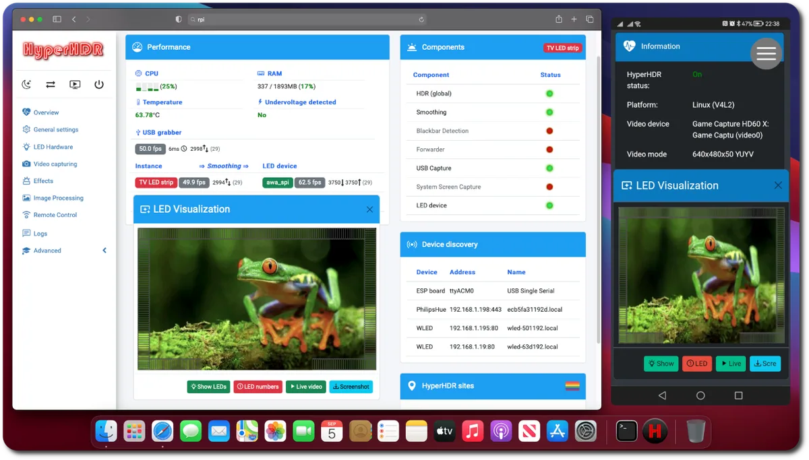
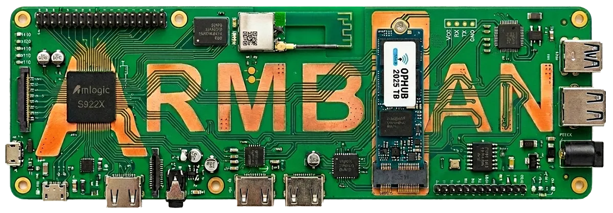
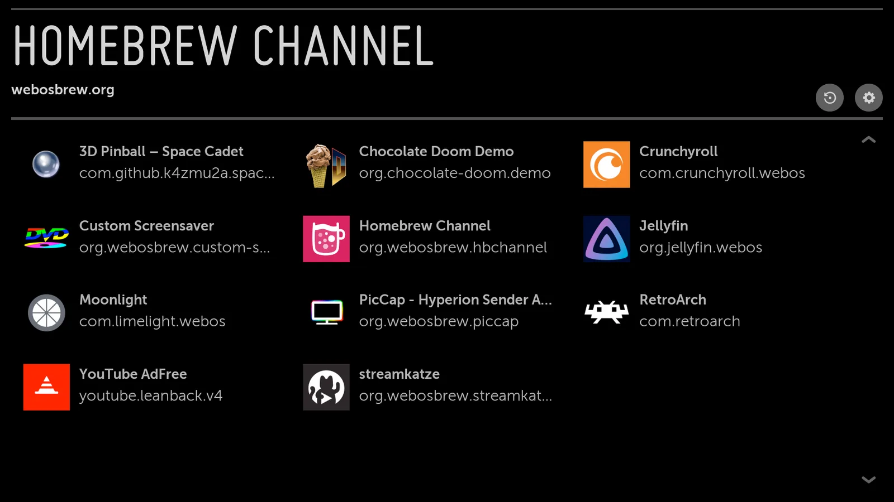
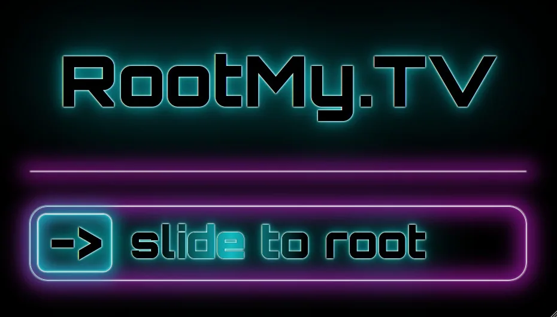

Supported older device: compare the LibreELEC media-center route
Turn an old mini PC or supported device into a dedicated Kodi player.
First distinguish a smart TV from a TV box, then match the chipset, firmware, and recovery path. Similar names and enclosures do not establish image compatibility.

Turn an old mini PC or supported device into a dedicated Kodi player.
 Fallback
FallbackProvide a dedicated media OS for compatible Amlogic TV boxes.

Turn selected idle TV boxes into lightweight Linux service hosts.

Provide community app installation and management on an owner's webOS TV.

Preserve a historical route for running homebrew on old webOS TVs.
FallbackThe goal is to convert HK1 Box from an Android TV box into a small Armbian host for Docker, file services, Home Assistant or light network services.